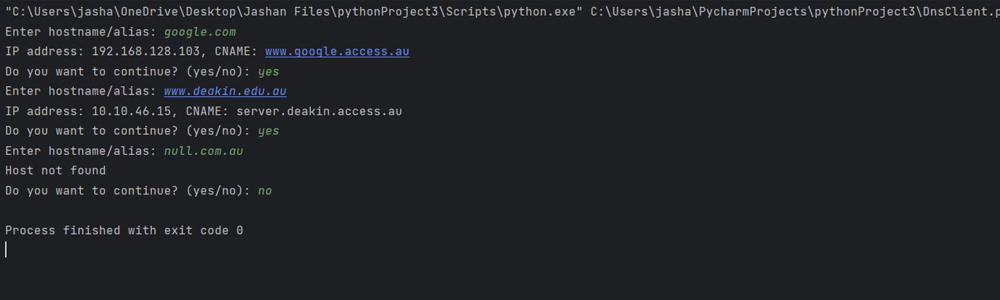
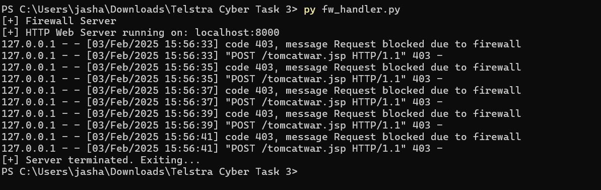

Ping using icmplib
This Python project allows users to ping multiple hostnames and check their availability.
Using the icmplib library, it sends four ICMP packets to the selected host, measuring response times and determining whether the host is reachable. The program starts with a predefined list of websites and lets users add more.
It then displays the list and prompts users to select a hostname by index to initiate the ping.
The program handles errors such as invalid input and unreachable hosts gracefully, ensuring robustness. This project enhances troubleshooting skills and helps in network diagnostics.
📌 Skills & Tools: Python, icmplib, loop structures for automation
View on GitHub
Custom Ping application

This is a python code that will create custom ICMP packets and send requests to any domain for ping.
In this task, I created my own ping application, where I can ping IP and domain names of different websites, I used socket programming in Python to develop the code, although there were many challenges that I had to encounter and
I had to take some help to understand the logic of Checksum calculation. Overall, there was a lot to learn from this task.
📌 Skills & Tools: Python, socket programming, checksums
View on GitHub
Creating a DNS Server

This Python script simulates a local DNS server using UDP on port 53. The server listens for incoming hostname queries from clients and responds with predefined IP addresses and CNAME (Canonical Name) records stored in a dictionary. If a hostname matches an entry in the dictionary, the server returns the corresponding IP and CNAME; otherwise, it replies with "Host not found."
This project demonstrates DNS resolution simulation and socket programming for network security research and testing.
📌 Skills & Tools: Python, UDP, Socket library
View on GitHub
Firewall Handler for Spring4shell vulnerability

In this challenge, I analyzed the Spring4Shell (CVE-2022-22965) vulnerability, investigated security bypasses, and wrote an Incident Postmortem Report detailing the detection, impact, and resolution of the attack.
I also implemented a firewall rule in Python to block malicious requests and prevent future exploitation.
📌 Skills & Tools: Python, incidence response, threat detection, SOC analysis, Firewall
View on GitHub